1.2 ggplot2 data visualization
“The goal is to turn data into information and information into insight.”
— Carly Fiorina
This part will give you an understanding of data visualization using ggplot2. R does have many packages/methods to make graphs, infact base-R has plot, histogram etc. (as you have seen in the Data section) for plottig but ggplot2 is one of the most versatile one. It implements grammar of graphics, a powerful tool to describe and build the components of graphs concisely. If you are curious and want to get in-depth understanding of grammar of graphics in ggplot2 you can read The Layered Grammar of Graphics by Hadley Wickham.
First install tidyverse which includes the ggplot2 package and then add to the current workspace.
A package needed to be installed once, but it needs to be (re)loaded in every new session.
1.2.1 Basics
1.2.1.1 mpg dataset
mpg is a dataset in tidyverse, which contains observations collected by US Environment Protection Agency on 38 models of cars.
To get deatails about mpg run
1.2.1.2 Our first ggplot
For plotting the relationship between displ and hwy variable in mpg dataset, run this code (It puts the variables in x and y axis respectively):
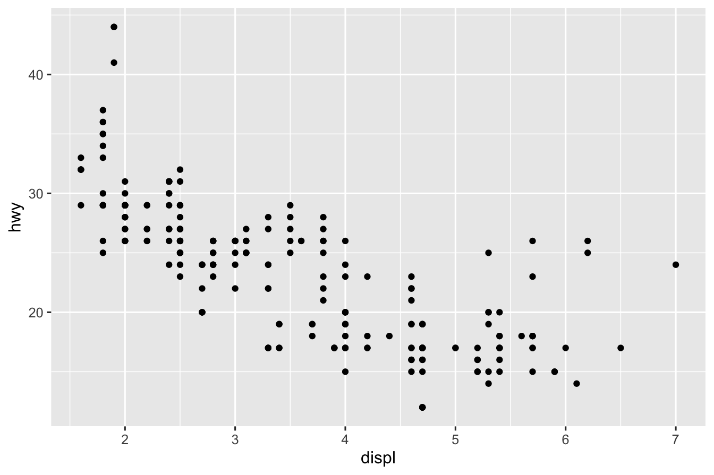
The plots shows negative relationship between Engine Size(displ) and Fuel Efficiency(hwy).
Begins with a function ggplot()-creates a coordinate system that you can add addlayers to. The first arugment is the data set to use ggplot(data = mpg) creates an empty graph. Add layers to ggplot()- the function geom_point() adds a layer of points to your plot. Each geom function takes a mapping argument. The mapping argument is always paired with aes()
1.2.2 Aesthetic mappings in ggplot2
Take a look at the below graph.
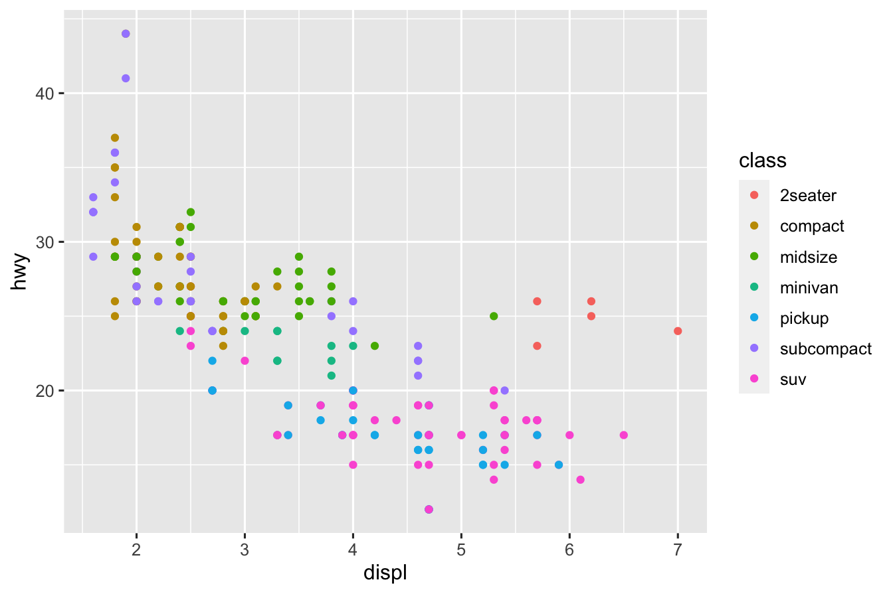
We have added a colour = class by mapping it to an aesthetic called colour to for distinct values of class variable.
The visual property of the objects you plot is called an aesthetic. It contains the information of size, shape, color of points etc.. By changing the aesthetic properties you can display points in other different ways.
1.2.2.1 aes() in ggplot
It Associate the name of the aesthetic to the name of the variable. the function gathers together each of the aesthetic mappings used by a layer and passes them to the layer’s mapping argument. It is clever enough to select a reasonable scale to use with the aesthetic, and it also constructs a legend (or axis labels) that explains the mapping between levels and values.
In the above example, the name of the aesthetic was colour and name of the variable is class. ggplot2 smartly assigns a unique level of the aesthetic colour to a unique level to the variable class. This process of unique association is called Scaling.
Let’s look at some more examples.
- The geom allows us to set the aesthetic properties manually (without putting inside
aes()). However, it can’t convey information about a variable. It just changes the overall the plot.
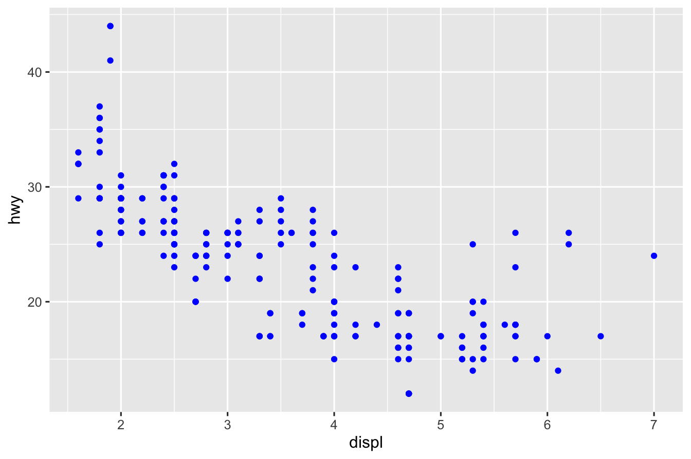
As you can see in this example, colour = "blue" changes the colour of all points to blue.
- The
alphaaesthetic: It handles the tranparency of points
ggplot(data = mpg) +
geom_point(mapping = aes(x = displ, y = hwy, alpha = class))
#> Warning: Using alpha for a discrete variable is not advised.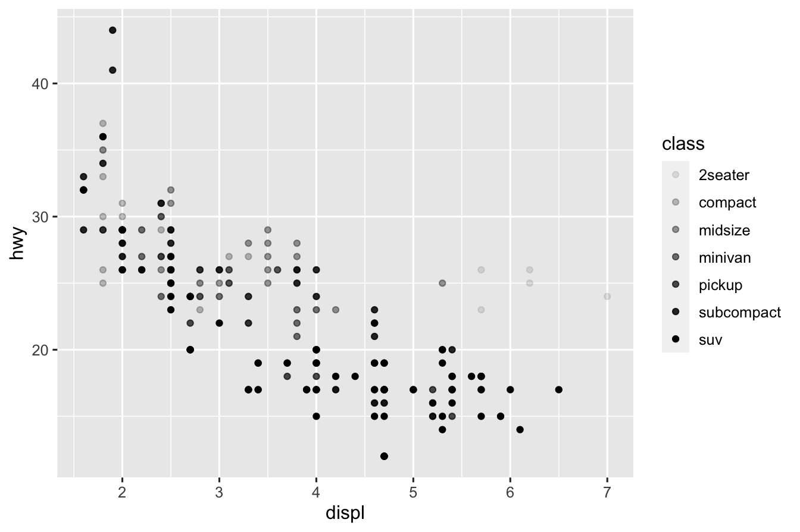
- The
shapeaesthetic: As the name suggests it controls the shape of the points
ggplot(data = mpg) +
geom_point(mapping = aes(x = displ, y = hwy, shape = class))
#> Warning: The shape palette can deal with a maximum of 6 discrete values because
#> more than 6 becomes difficult to discriminate; you have 7. Consider
#> specifying shapes manually if you must have them.
#> Warning: Removed 62 rows containing missing values (geom_point).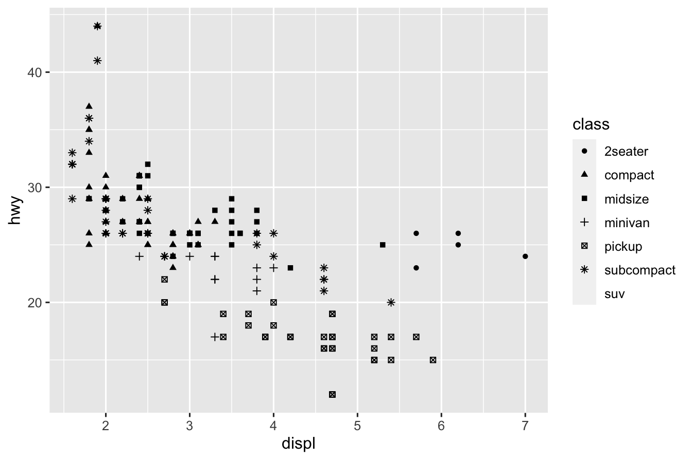
But unfortunately ggplot2 plots only 6 different shapes in a plot! And as a result the additional group suv gets ommited (as you can see in the warning message!).
1.2.3 Facets (wrap and grid).
Facets in ggplot splits the plot as per the argument.
ggplot(data = mpg) +
geom_point(mapping = aes(x = displ, y = hwy, colour = class)) +
scale_colour_viridis_d(option = "plasma") +
facet_wrap(~class, nrow = 2)
with facet_wrap you can split plot by a single variable into subplots that each display one subset of the data.
ggplot(data = mpg) +
geom_point(mapping = aes(x = displ, y = hwy, colour = class)) +
scale_colour_viridis_d(option = "plasma") +
facet_grid(drv ~ cyl)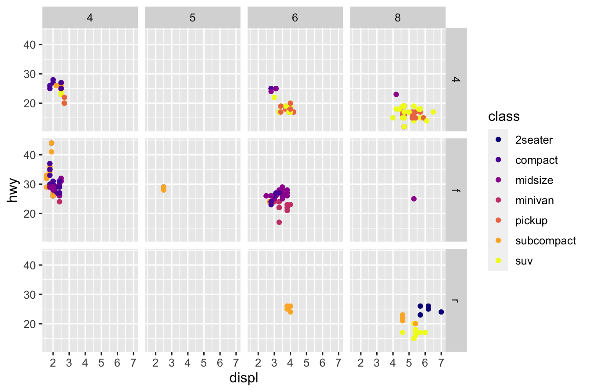
with facet_grid you can split plot by a combination of two variables into subplots that each display one subset of the data.
ggplot(data = mpg) +
geom_point(mapping = aes(x = displ, y = hwy, color = class)) +
scale_colour_viridis_d(option = "plasma") +
facet_wrap(~class, nrow = 2)
1.2.4 Geometric objects
Geometrical object that a plot uses to represent data. These are
- bar-charts:
geom_bar,geom_histogram - line-charts:
geom_smooth - box-plot:
geom_boxplot - scatter-plot:
geom_point
1.2.4.1 Bar-charts: geom_bar
- First specifies a sequence of points, called breaks.
- It counts the number of observation between the breaks, called bins.
- Places a bar in each bin with
- base being the length of the bin and
- height determined by either the frequency or proportion of observations in the bin.
Look at the following examples:
# left
ggplot(data = mpg, mapping = aes(x = cty, fill = class)) +
geom_histogram() +
scale_fill_viridis(discrete = TRUE)
# right
ggplot(data = mpg, mapping = aes(x = cty, fill = class)) +
geom_histogram(binwidth = 5) +
scale_fill_viridis(discrete = TRUE)
By default ggplot2 picks a suitable binwidth but you can specify it explicitely.
table <- as.data.frame(table(mpg$class))
ggplot(data = table) +
geom_bar(mapping = aes(x = Var1, stat = "identity"))
#> Warning: Ignoring unknown aesthetics: stat
ggplot(data = mpg) +
stat_summary(
mapping = aes(x = class, y = hwy),
fun.min = min,
fun.max = max,
fun = median
)
ggplot(data = mpg) +
geom_bar(mapping = aes(x = class, color = class))
ggplot(data = mpg) +
stat_count(mapping = aes(x = class)) 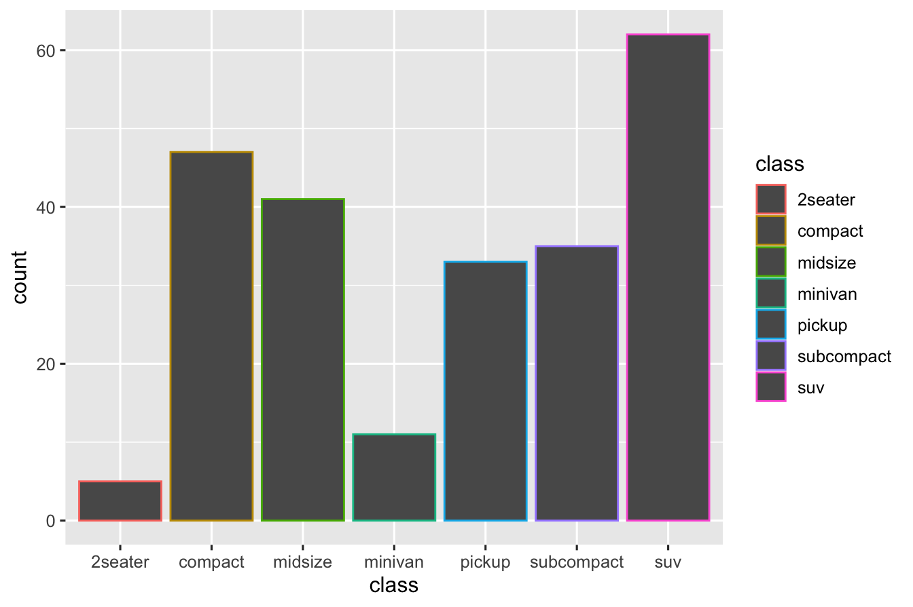
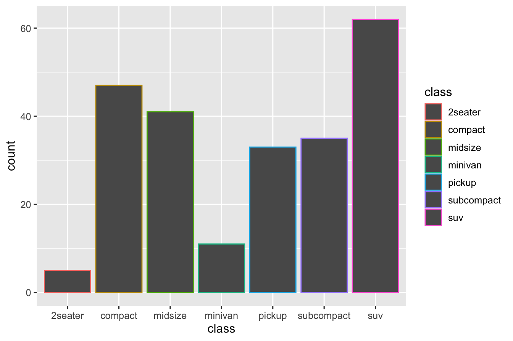
1.2.5 Statistical transformations
stat-count: Bar charts
A bar chart is a graph where for each category a bar with a height proportional to the count in the respective category is drawn. Along x-axis the categories (or levels) are displayed.
1.2.7 Coordinate systems
ggplot(data = mpg) +
geom_bar(mapping = aes(x = class, fill = class)) +
scale_fill_viridis_d() +
coord_flip()
ggplot(data = mpg) +
geom_bar(mapping = aes(x = class, fill = class)) +
scale_fill_viridis_d() +
coord_polar()
ggplot(data = mpg, mapping = aes(x = class, y = hwy)) +
geom_boxplot()
ggplot(data = mpg, mapping = aes(x = class, y = hwy)) +
geom_boxplot() +
coord_flip()
ggplot(data = mpg) +
geom_bar(mapping = aes(x = class, fill = trans), position = "dodge") +
scale_fill_viridis_d()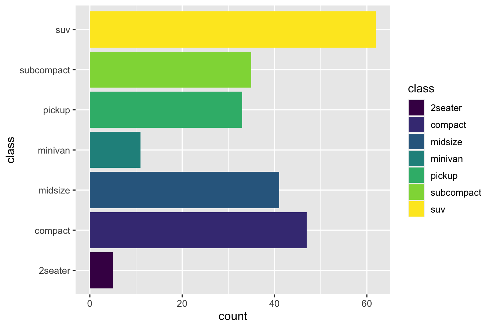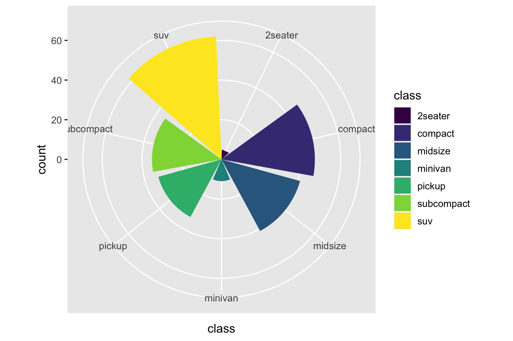 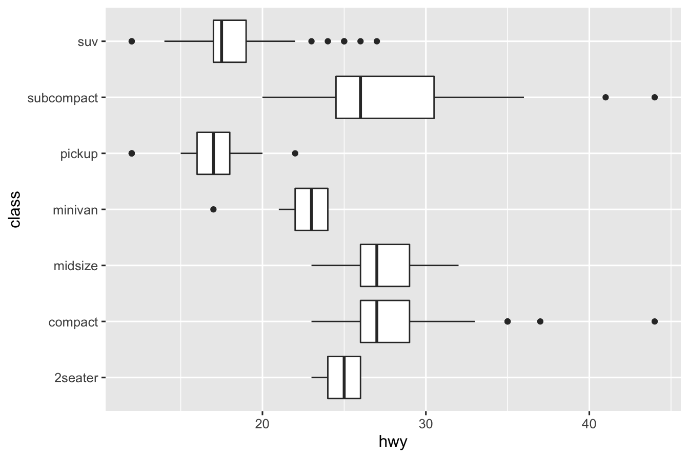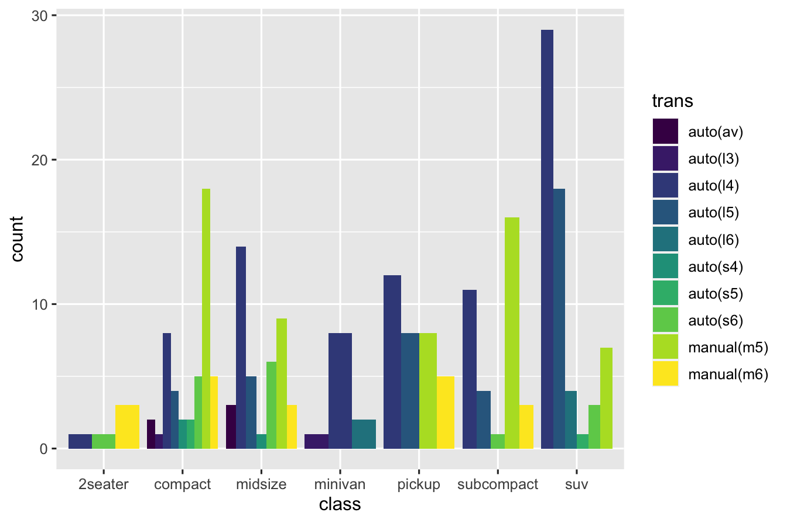
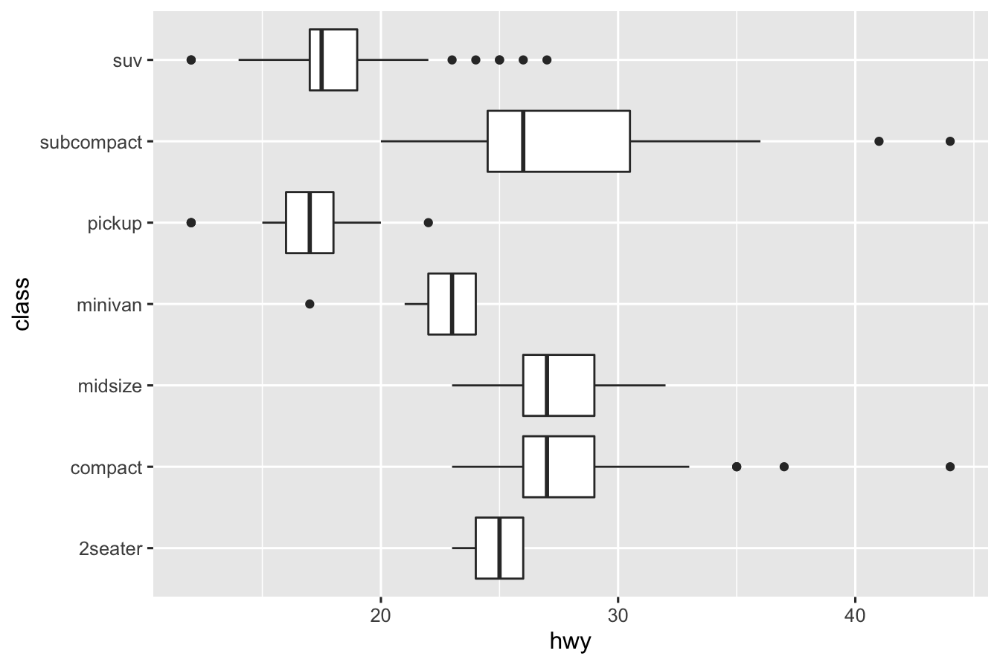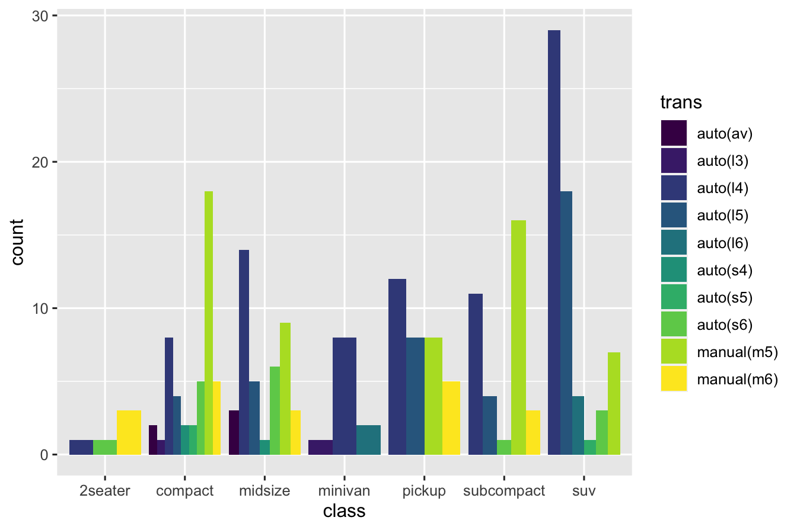
ggplot(
data = filter(mpg, class == "subcompact"),
mapping = aes(x = class, y = hwy)
) +
geom_boxplot() +
coord_flip()
1.2.8 The layered grammar of graphics
ggplot(data = <DATA>) +
<GEOM_FUNCTION>(
mapping = aes(<MAPPINGS>),
stat = <STAT>,
position = <POSITION>
) +
<COORDINATE_FUNCTION> +
<FACET_FUNCTION>So far you have learnt some basic data visualization with ggplot2. To extend your data-visualization skills with beautiful and professional plots you can visit The R Graph Gallery website. They have wonderful collection of plots made with ggplot2 and other R tools.
Exercises
geom_smoothfunction: After loading librarytidyverseexecute the following command:Understand (as best as possible) what curve the code is drawing. Add the following aesthetic mappings using variable
drvand explain the plot in each case:linetypegrouplinetypecolour(useviridisscale filling)
Write a R-code that produces one plot in which : there is a scatter plot of
displvshwyusing class for colour (againviridis) and over layered on it a best fit line usinggeom_smoothfor themidsizecars.
Go to https://data.incovid19.org and write out a one paragraph description of what the data set contains.
Download data set from: https://data.incovid19.org/csv/latest/states.csv . Load
state.csvin R into a dataframe calledstate_df.- Pick a state of India which has the same starting letter as the starting letters in your first, middle or last name. For example: Siva Athreya could pick Arunachal Pradesh.
- Subset the dataframe
state_dfto have only data from the state that you picked in the previous step and call the resulting dataframe asmystate_df - Using
mystate_dfcompute the daily active cases for the state. Then plot a line chart usinggeom_linefor the same from the date you started classs in ,viridiscolored by date.- Provide: Title as “Active cases for State - name_of_the_state”; x-label - “Dates”, y-label - “Cases”, x-ticks to be dates.
- Using
mystate_dfcompute the total Deceased figures for each month since March 2020 till date. Then plot a bar chart usinggeom_barof the monthly Deceased totals,viridiscolored by month.- Provide: Title as “Monthly Deceased Totals for State - name_of_the_state”; x-label - “Months”, y-label - “Deceased Total”, x-ticks to be names of months.
- Using
state_dfcompute the total Confirmed cases and total Deceased for each state since March 2020 till date. Then plot a scatter usinggeom_pointof the total confirmed cases of the states versus total deceased figures;viridiscolored by state.- Provide: Title as “Scatter Plot of Confirmed Versus Deceased”; x-label - “Deceased Figures”, y-label - “Confirmed Cases”. Can you label the dots with the State names?
- Examine the structure of the inbuilt dataset
iris. How many observations and variables are in the dataset? Using ggplot produce the following scatter plot: